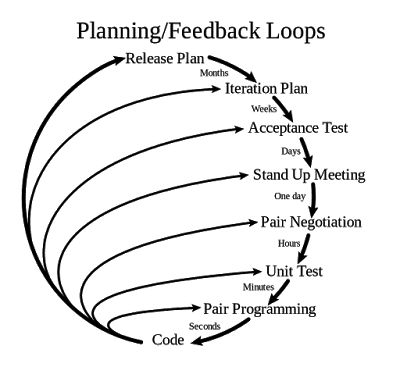

1. Historia
Creada por Kent Beck en 1996 para el proyecto C3 de Chrysler. Se basa en llevar las buenas prácticas de programación al límite o "extremo".

2. Prácticas Clave
- Historias de Usuario: Requisitos escritos por el cliente.
- Pair Programming: Dos programadores trabajando en un solo equipo.
- Diseño Simple: Hacer solo lo necesario para que funcione hoy.
- Propiedad Colectiva: Cualquiera puede mejorar cualquier parte del código.